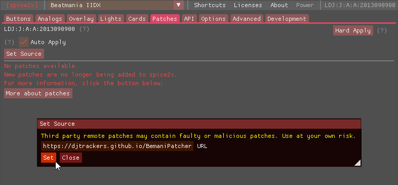
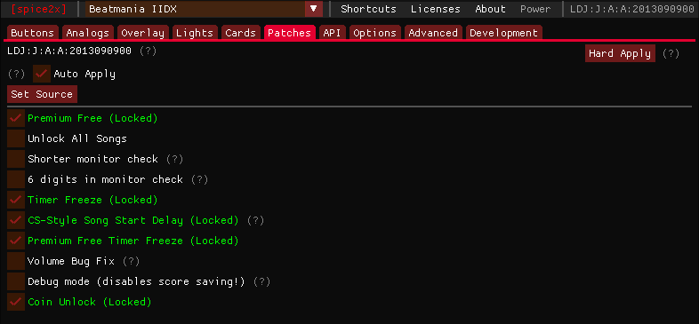

This is an unofficial mirror of mon’s BemaniPatcher repository with patches converted to work with the spice2x remote patch format.
By using the URL https://djtrackers.github.io/BemaniPatcher in the Patches configuration tab,
you can apply patches without having to modify any game files.

